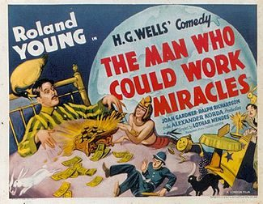
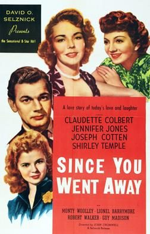
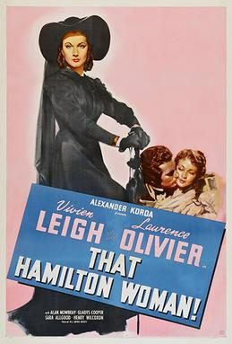
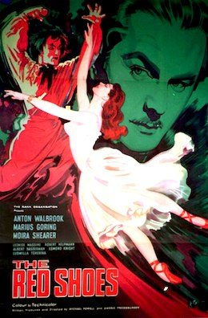
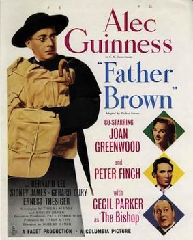
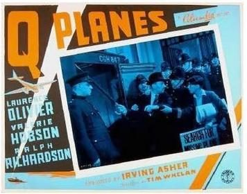
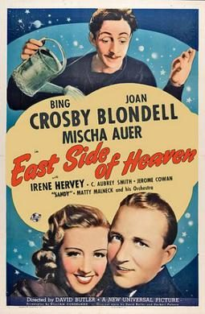

THE STANFORD THEATRE
Now Showing
·
Upcoming
·
Past
·
Search
October 14 - December 24, 2005
Fall 2005
21 bills
October 14 - 15
My Fair Lady (1964)
171 min
October 16
My Fair Lady (1964)
171 min
October 21 - 23
Moon Over Miami (1941)
91 min
Singin' in the Rain (1952)
103 min
October 27 - 28
The Scarlet Pimpernel (1934)
97 min

The Man Who Could Work Miracles (1936)
80 min
October 29 - 30
Seven Days to Noon (1950)
94 min
And Then There Were None (1945)
97 min
November 3 - 4

Since You Went Away (1944)
120 min
November 5 - 6
Stormy Weather (1943)
78 min
Sun Valley Serenade (1941)
86 min
November 10 - 11
Cluny Brown (1946)
108 min

Lady Hamilton <aka> That Hamilton Woman (1941)
108 min
November 12 - 13
Black Narcissus (1947)
97 min
The Innocents (1961)
100 min
November 17 - 18
Counsellor at Law (1933)
82 min
Gold Diggers of 1933 (1933)
96 min
November 19 - 20

The Red Shoes (1948)
133 min
An American in Paris (1951)
108 min
November 24 - 25
Green for Danger (1946)
91 min

Father Brown (1954)
91 min
November 26 - 27
The Four Feathers (1939)
107 min

Q Planes (1939)
82 min
December 1 - 2
A Matter of Life and Death (1946)
108 min
This Happy Breed (1944)
115 min
December 3 - 4
Down Argentine Way (1940)
97 min
National Velvet (1944)
123 min
December 8 - 9
Come September (1961)
112 min
Bread, Love and Dreams (Pane, Amore e Fantasia) (1953)
93 min
December 10 - 11
Heaven Can Wait (1943)
108 min
Portrait of Jennie (1948)
86 min
December 15 - 16
Footlight Parade (1933)
104 min

East Side of Heaven (1939)
88 min
December 17 - 18
Cover Girl (1944)
107 min
Holiday Inn (1942)
100 min
December 19 - 23
The Shop Around the Corner (1940)
99 min
Miracle on 34th Street (1947)
96 min
December 24
It's a Wonderful Life (1946)
125 min